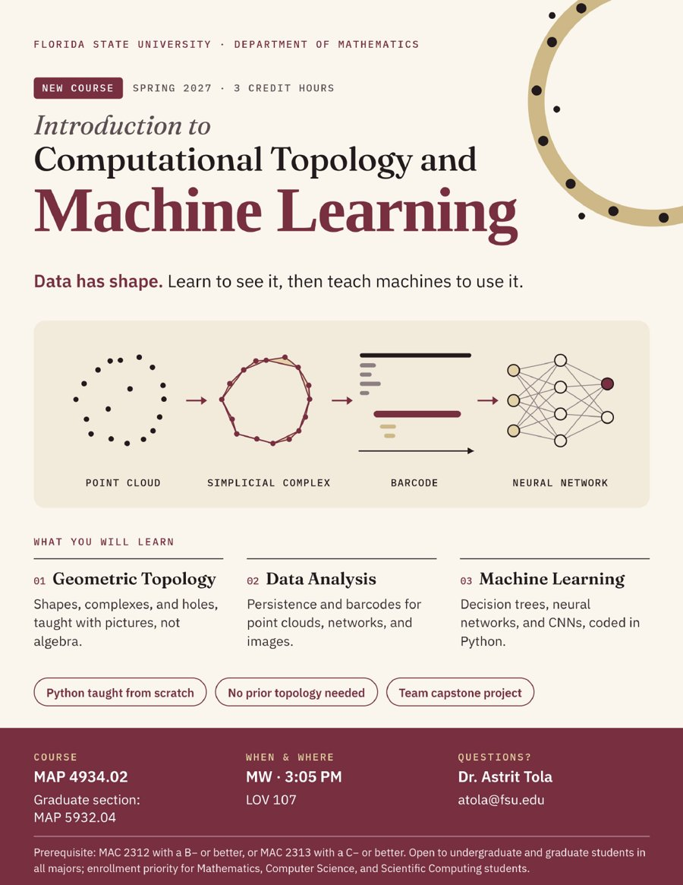

New Course · Spring 2027
Spring 2027 · MAP 4934.02 / MAP 5932.04 · MW 3:05 PM · LOV 107
New Introduction to Computational Topology and Machine Learning
Data has shape. This course shows students how to see and measure that shape with topology, and how to use it in modern machine learning, from decision trees to neural networks. It is open to all majors, with no prior topology, Python, or machine learning required. Python is taught from scratch, and the semester ends with a capstone project. Graduate students take a dual-listed section with a research-level project that produces a submission-ready manuscript.

Florida State University
| Term | Course | Role |
|---|---|---|
| Spring 2027 | Introduction to Computational Topology and Machine Learning (new course) — MAP 4934.02 (Undergraduate) · MAP 5932.04 (Graduate) | Instructor of Record |
| Spring 2027 | MAP 2302 — Ordinary Differential Equations | Instructor of Record |
| 2025 – 2026 | MAP 2302 — Ordinary Differential Equations | Instructor of Record |
University of Texas at Dallas
| Course | Title | Role |
|---|---|---|
| MATH 1314 | College Algebra | TA |
| MATH 1316 | Trigonometry | TA |
| MATH 2312 | Precalculus | TA |
| MATH 2413 | Calculus I | TA |
| MATH 2414 | Calculus II | TA |
| MATH 2420 | Differential Equations | TA |
| MATH 4301 | Mathematical Analysis | TA |
| MATH 4341 | Topology | TA |
| MATH 6310 | Topology (Graduate) | TA |
Mentoring
I am actively mentoring undergraduate students in research. Current projects:
- HOT-KG: Harmonic Optimal Transport for Knowledge Graph Completion — an FSU Undergraduate Research Opportunity Program (UROP) project with three undergraduate researchers.
- TopoCorr-KG (ReliaQuest Innovation Challenge) — supported by Ece Karacam (GTA) and Sebastian Powers (UTA).
If you are a student interested in topological data analysis, graph machine learning, knowledge graphs, or AI for cybersecurity / drug discovery, please get in touch.